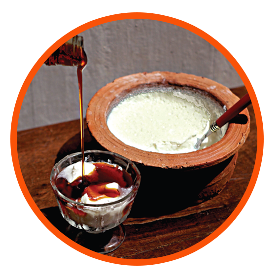

පැසවු කිරි නිෂ්පාදන වල ඇති බැක්ටීරියා (උදා :- ලැක්ටෝබැසිලස්, බල්ගරික්ස්, ස්ට්රෙප්ටොකොකස්, තර්මොෆිලස්) ලැකටෝස් ජිර්ණය කර පැසවන ලද ආහාරයේ (උදා :- යෝගට්, මුදවන ලද කිරි )ඇති ලැක්ටෝස් ප්රමාණය පහත හෙළනු ලබයි.
ප්රෝබයෝටික් යෝගට් සාමාන්ය යෝගට් වලට වඩා වෙනස් වන්නේ ඒවායේ සැලකිය යුතු ප්රමණයක් (10 6 ට වඩා වැඩි බැක්ටිරියා / ග්රූම්) හිතකර ප්රෝබයෝටික් බැක්ටිරියා (උදා :- බිෆ්රිඩොබැක්ටිරියම්, බීෆ්රිඩම්, බිෆිබෝබැක්ටිරියම්, ලොන්ගම්, ලැක්ටොබැසිලස්, ඇසිඩෝෆිලස්, ලැක්ටෝබැසිලිස් බැක්ටිරියා කැසෙයි ආදිය )අඩංගු නිසාය. මෙම ප්රෝබයෝටික් බැක්ටිරියා නිසා ශරිරයට විවිධ ප්රයෝජන ) අන්ත්රය ආශ්රිත බැක්ටිරියා ගහණය වැඩිකර ගැනිමෙන් ) ලැබේ. එම බැක්ටිරියා අන්ත්රය ආශ්රීත පරිසරය රෝග කාරකයින් ගෙන් ආරක්ෂා කර ව්යාධිකාරකයින්ගෙන් ඇතිවන රෝගාබාධ තත්ත්ව අඩු කරනු ලබයි. තවද මෙම බැක්ටිරියා විටමින් B සංස්ලේෂණය ,අදික රුධිර පිඩනය සහ කොලෙස්ටරෝල් අබු කිරිම අන්ත්ර ආශ්රිත පිළිකා අඩු කිරිම, ප්රතිශක්තිය වැඩි කිරිම සහ ලැක්ටෝස් අඩුකරලිමට උපකාරි වේ.